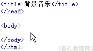
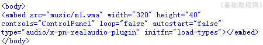

Dreamweaver 8 基础入门教程
六、插入音乐 返回
这一节我们来学习如何在页面插入音乐，通过播放器来播放和控制音乐，常见的音乐格式有mp3、wma、rm等等，音乐一般只有声音，没有图像，有图像的叫视频，下面我们来看一个练习；
1、启动Dreamweaver
1）点击“开始－所有程序－Macromedia－Macromedia Dreamweaver 8”， ；
；
2）在中间的“创建新项目”中点第一个 HTML，打开一个空白文档，把标题改为“背景音乐”；

3）点“文件－保存”命令，以 chryy 为文件名保存文件，保存位置在建立的站点中；
4）在右面侧边栏的站点中，找到上次新建的文件夹 music ，找到一首喜欢的歌曲，把它拖到这个文件夹里面；
本课images文件夹中有一首 m1 文件可以作为练习，它是wma格式的；
2、插入音乐
1）在标签下面的“文档”工具栏中点一下“拆分”标签，窗口分成两部分，上边是代码，下边是文档；
2）在上面的代码窗口中，找到<body>标签，在它后面点一下鼠标，然后按一下回车键插入一个空行，

3）切换到英文输入法状态，输入下列代码：
<embed src="music/m1.wma" width="320" height="40"
controls="ControlPanel" loop="false" autostart="false"
type="audio/x-pn-realaudio-plugin" initfn="load-types"></embed>

输入的时候会有提示，里面的单词是代码标签，双引号里面是参数值，loop是循环的意思，autostart是自动播放，这儿都是false，也就是不用的意思；
保存一下文件，点预览按钮，点左边的播放按钮，听一下悠扬的乐曲；
停止音乐可以点播放器上的停止按钮，要播放其他音乐，只要修改src标签后面的音乐地址即可；
本节学习了插入背景音乐的基本方法，学习了使用代码窗口的方法，如果你成功地理解并完成了练习，请继续学习下一课内容；
本教程由86团学校TeliuTe制作|著作权所有
基础教程网：http://teliute.org/
美丽的校园……
转载和引用本站内容，请保留版权信息和本站链接。